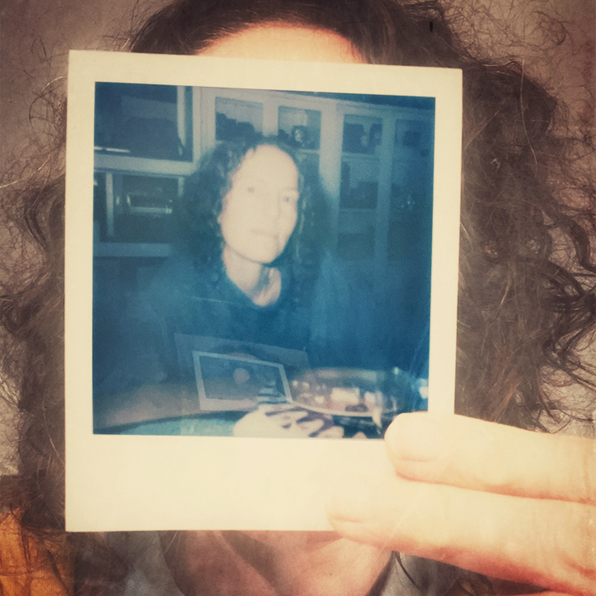

Selections from CWD Index
-
The Nicest Place
My name is Owen Mundy (he/him). I am based in Davidson, North Carolina. I usually identify as an artist and designer, since I am always using both of these perspectives when I make these things. My favorite technologies are whatever the idea dictates, but usually I choose one that allows. One of my favorite works online is The Nicest Place because it makes me happy every time I see it. It doesn't try to be more than it is — a collection of videos of people around the world giving virtual hugs to visitors, countering the commerciality and pessimism so commonly found online.
-
The Colour Clock

My name is xtine burrough (x/x or she/her). I live in Dallas, Texas where I teach at UT Dallas. I refer to myself as a hybrid artist, a media artist, and an artist-scholar, depending on who I’m talking with; and I have seen my work categorized as new media, electronic literature, installation, remix, and digital poetry. My studio practice is fluid. My favorite technology offline is an X-acto knife, and in terms of digital tools I love the laser cutter. I also enjoy working within the confines of the browser, and meeting audiences with unexpected media on social platforms. While I’m generally drawn to political artwork, one of my favorite online works is the Colour Clock. It’s always accurate and is mesmerizing to watch.
-
endless.horse
We love Endless.horse (2015) by Colleen Josephson and Kyle Miller. It depicts an ASCII art horse with legs that automatically grow as users scroll. Created during the Stupid Shit No One Needs & Terrible Ideas Hackathon, we are tickled by the simplicity and humor in this piece.